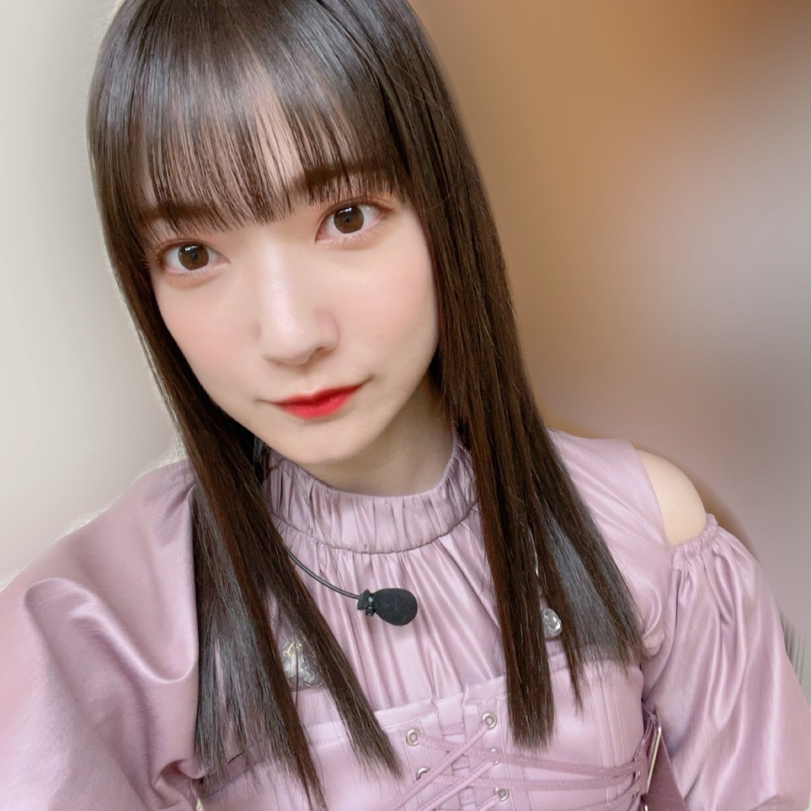
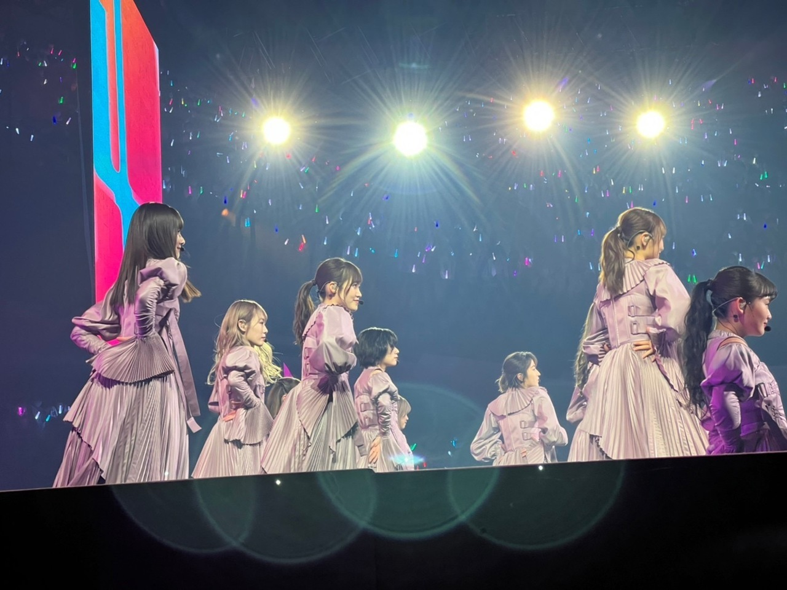
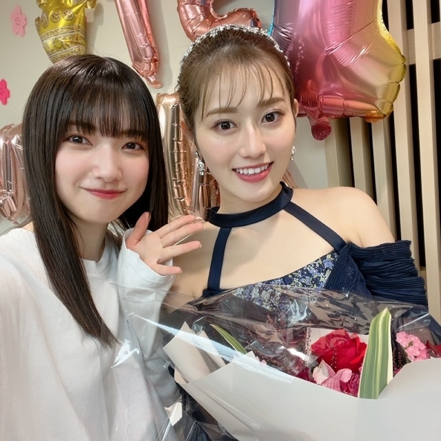
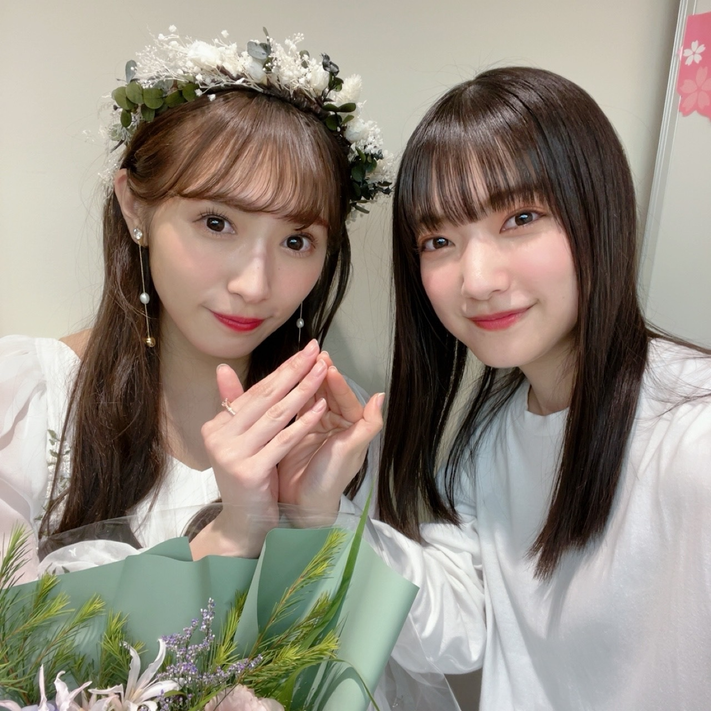
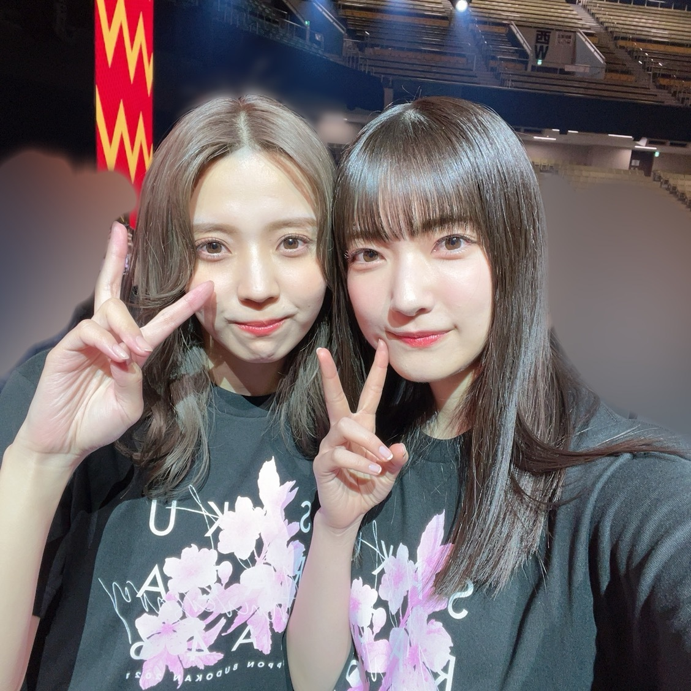
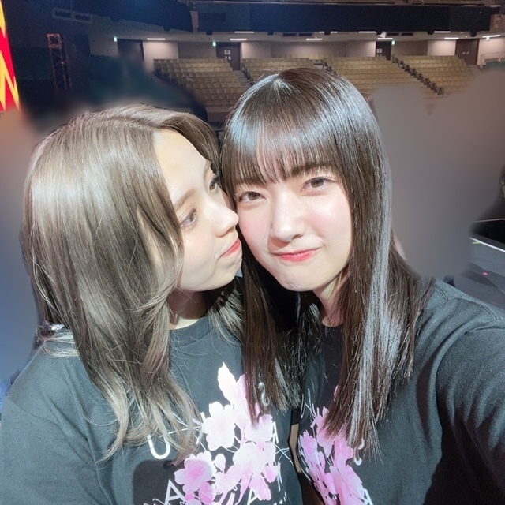

思えば思われる
らしいけど、、そんなことあるかいな〜と思ってて
10年前くらいに知ったそのことばが
「そんなことあったでしょ〜」どや、と心に
染み込んできたこんにち
ありましたそんなこと、とても！

12月9日、10日に
『1st YEAR ANNIVERSARY LIVE』を日本武道館で開催させていただきました
会いに来てくださったみなさん
配信を見てくださったみなさん
櫻坂を想ってくださったみなさん
ありがとうございました！
櫻坂46は1歳になりました🎂
世界中のBuddiesのみなさんも、
ニューヨーク・タイムズスクエアにお祝いのメッセージを掲載してくださり、ありがとうございました！
「櫻坂を見る会」
という名前を企画名にしてくださっていたみたいで、、
とても嬉しいです*
ありがとうございます

応援してくださるみなさんのことも応援してて
好きでいてくれるみなさんのことも好きでで
沢山笑っていてほしいと思ってくれるみなさんにも沢山笑っていてほしくて
会いたいと思ってくださるみなさんにも会いたいと思っていて
毎日考えてくれるみなさんのことも毎日考えていて
2周年目も両想いで、はい*
思えば思われる
と思っておきます


茜さん、梨加さんご卒業おめでとうございます！
していただいたことばかりで感謝の気持ちでいっぱいです
お2人がずっとずーーっと幸せに過ごせますようにと願っています*


ゆいさんお帰りなさい、だいすきで〜〜す♡
そして、メリークリスマスイブの本日
12月24日(金) 17:00〜23:10
『MUSIC STATION ウルトラ SUPERLIVE2021』
櫻坂46が出演させていただきます✨
ぜひご覧ください🎄
大園玲